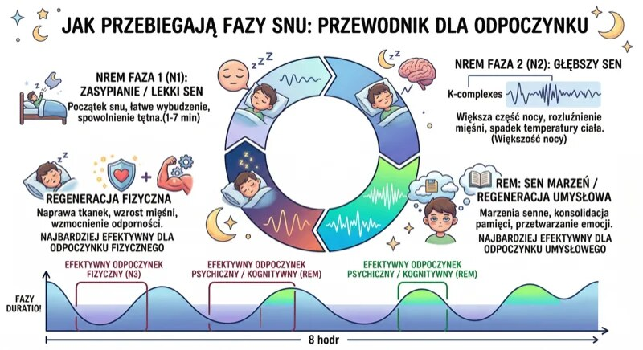
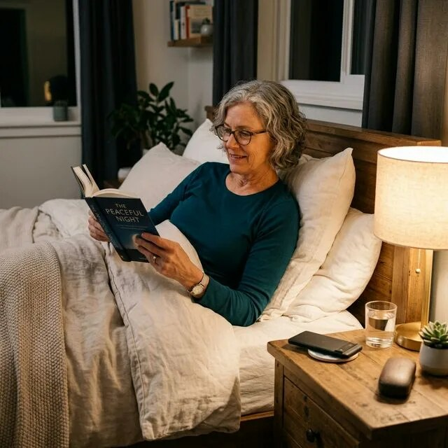
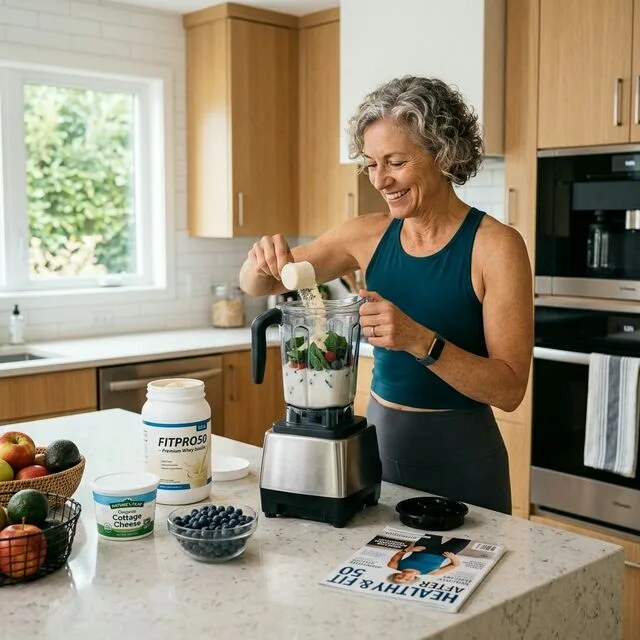

Szybka odpowiedź
Po 50-tce potrzeba snu nie spada automatycznie do 5-6 godzin. National Institute on Aging podaje dla starszych dorosłych około 7-9 godzin na noc. Zacznij od stałej pory wstawania, światła rano, regularnego ruchu i ograniczenia alkoholu wieczorem. Jeżeli bezsenność trwa około 3 miesięcy lub występują bezdechy, potrzebna jest ocena, a nie kolejny gadżet.
Kluczowe wnioski
- Starszy wiek zmienia strukturę i porę snu, ale nie oznacza, że chroniczne 5 godzin jest wystarczające.
- Najbardziej użytecznym punktem rytmu jest stała pora wstawania, także po gorszej nocy.
- Alkohol może ułatwić zaśnięcie, a jednocześnie nasilać fragmentację w drugiej części nocy.
- Przewlekłą bezsenność leczy się przede wszystkim CBT-I; higiena snu jest elementem, nie pełnym leczeniem.
Ile godzin snu potrzeba po 50-tce?
National Institute on Aging wskazuje, że starsi dorośli, podobnie jak inni dorośli, potrzebują około 7-9 godzin snu. Indywidualna liczba różni się, dlatego oceniaj także funkcjonowanie w dzień. Regularna senność, problemy z koncentracją i odsypianie w dni wolne mogą wskazywać, że rzeczywista ilość lub jakość snu jest niewystarczająca.
Jeśli głównym problemem są pobudki, zastosuj 14-dniowy dziennik nocnych wybudzeń.

Jak ustawić rytm dobowy bez obietnic „resetu hormonów”?
Wstawaj o zbliżonej porze każdego dnia i szukaj jasnego światła po przebudzeniu, najlepiej na zewnątrz. Wieczorem stopniowo zmniejszaj pobudzenie i jasność. Te sygnały pomagają synchronizować rytm, ale nie działają jak przycisk resetujący melatoninę, kortyzol, hormon wzrostu ani wszystkie procesy regeneracji.
Codzienny marsz może być prostym kotwiczeniem aktywności; plan daje nordic walking po 50-tce.

Jak ruch, kofeina i alkohol wpływają na noc?
Regularny ruch sprzyja zdrowiu i może poprawiać sen, ale intensywny trening późnym wieczorem bywa pobudzający u części osób. Kofeina ma długi i zmienny okres działania, więc sprawdź indywidualnie wcześniejszą godzinę odcięcia. Alkohol nie jest lekiem nasennym: może skrócić zasypianie, lecz zwiększać wybudzenia i nasilać chrapanie.
Plan siłowy kończony z zapasem zamiast wyczerpania opisuje trening 3x30 po 50-tce.

Kiedy problem ze snem wymaga diagnostyki?
Skonsultuj przewlekłą trudność zasypiania lub utrzymania snu, zwłaszcza gdy trwa około 3 miesięcy i pogarsza dzień. Głośne chrapanie, obserwowane bezdechy, poranne bóle głowy, częste nocne oddawanie moczu i senność zwiększają podejrzenie bezdechu. Nagłe zasypianie za kierownicą oznacza bezpośrednie zagrożenie.
Nie lecz podejrzenia bezdechu samą higieną snu; szerszą ścieżkę badań porządkuje plan diagnostyczny po 50-tce.
| Dźwignia | Działanie | Jak ocenić? |
|---|---|---|
| Pora wstawania | Stała przez 7 dni | Mniejsza różnica między dniami |
| Światło | Jasno rano, ciemniej wieczorem | Łatwiejsza regularność |
| Ruch | Regularnie, bez późnego przeciążenia | Sen i reakcja następnego dnia |
| Diagnostyka | Przy bezdechach lub przewlekłej bezsenności | Leczenie przyczyny, nie gadżetu |
Dobry sen nie polega na perfekcyjnym wyniku zegarka, lecz na wystarczającej nocy i bezpiecznym, sprawnym dniu.
Najczęściej zadawane pytania
Czy po 50-tce wystarczy 6 godzin snu?
Nie można tego zakładać. Starsi dorośli zwykle nadal potrzebują około 7-9 godzin, choć indywidualna potrzeba się różni.
Czy alkohol pomaga spać?
Może ułatwić zasypianie, ale często fragmentuje drugą część nocy i może nasilać chrapanie lub bezdech.
Czy zegarek rozpoznaje bezdech senny?
Nie. Może wskazać sygnał do konsultacji, lecz rozpoznanie wymaga właściwej oceny medycznej i badania snu.
Co jest leczeniem pierwszego wyboru bezsenności?
W przewlekłej bezsenności jest nim wieloskładnikowa terapia poznawczo-behawioralna CBT-I, nie sama lista zasad higieny snu.
Jeśli chcesz połączyć sen, nocne wybudzenia, regenerację i codzienne nawyki w jeden plan, przejdź do Centrum Snu po 50-tce.
Źródła
- National Institute on Aging - sleep
- ACP guideline - CBT-I first line
- CBT-I in older adults - meta-analysis
- WHO physical activity guidelines
Uwaga: Artykuł ma charakter informacyjny i edukacyjny. Nie zastępuje konsultacji, diagnozy ani indywidualnego leczenia.